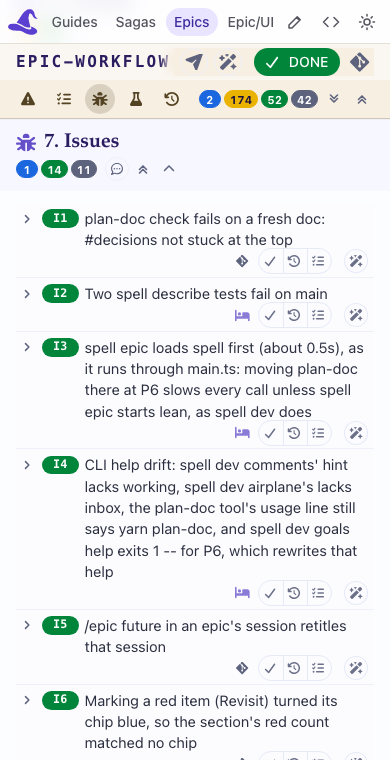

Open epic-workflow's page in the side bar's Review tab, at its Issues section, at the side bar's usual width, and fold and unfold an item or two.

Say what's cut or moves. If you'd rather the buttons took a narrow column beside the title, fail it with "buttons beside the title".
Owen asked (2026-10-19) for every folded header to show its whole title, wrapped, never cut with an ellipsis. It's done in the elements' CSS, so it shows once this branch's pack is what the side bar loads.
Claude · 2026-10-19 13:12
Checked by Claude, in Chromium on this branch's server and pack (a scratch copy of epic-workflow's page), at 1200px and at the side bar's 390px:
check-fold-epics.mjs --doc epic-workflow, every item and phase case
0px at both widths; an Overview sub-section (O2) folded and unfolded by its title: 0.3px at most.
Left for Owen, only the taste question:
Step: open epic-workflow's page in the side bar's Review tab, its Issues section (screenshot:
/private/tmp/claude-501/-Users-owen-www-spell-app-spell-epic-worktrees-epic-engine/22ed7018-9794-4666-bb86-22940c54f0b6/scratchpad/shots/v30/items-390.png).
Should: each issue's buttons on their own row under the title, at the right.
If not, or you'd rather they took a narrow column beside the title: tell Claude "buttons beside the title". Otherwise close this.